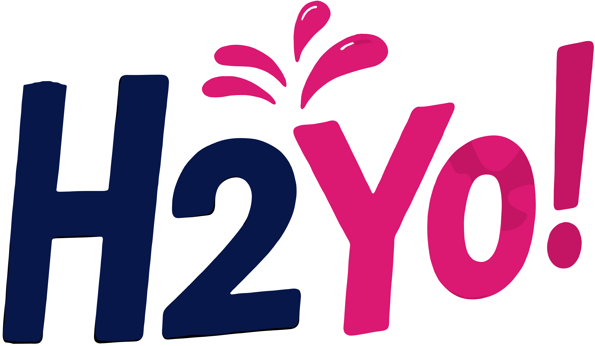
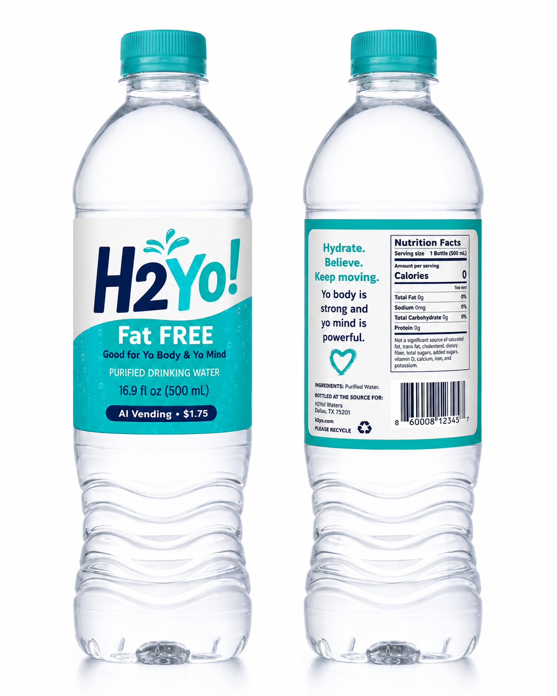
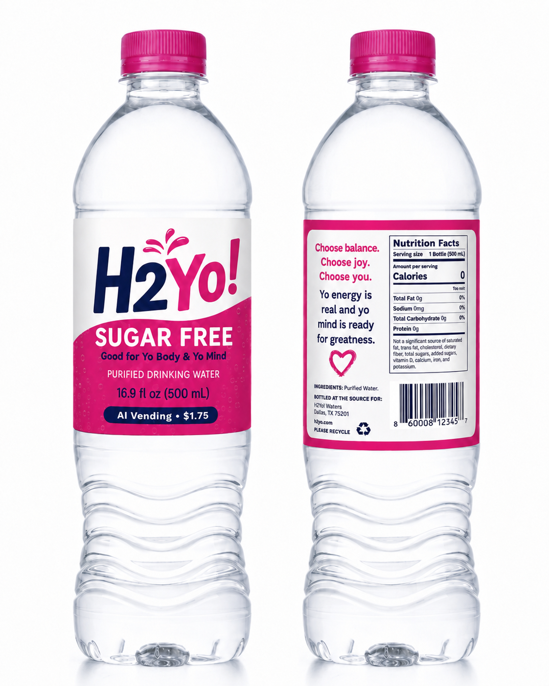
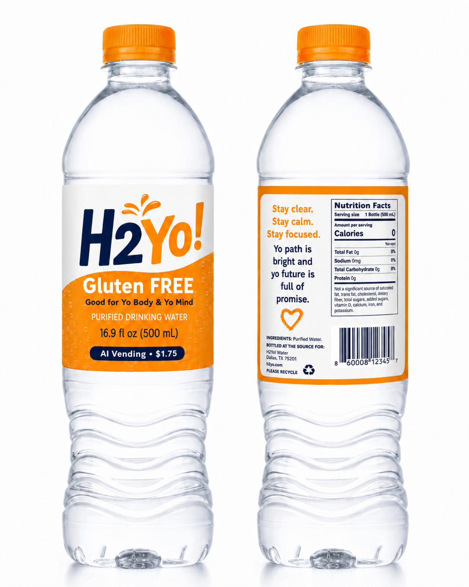
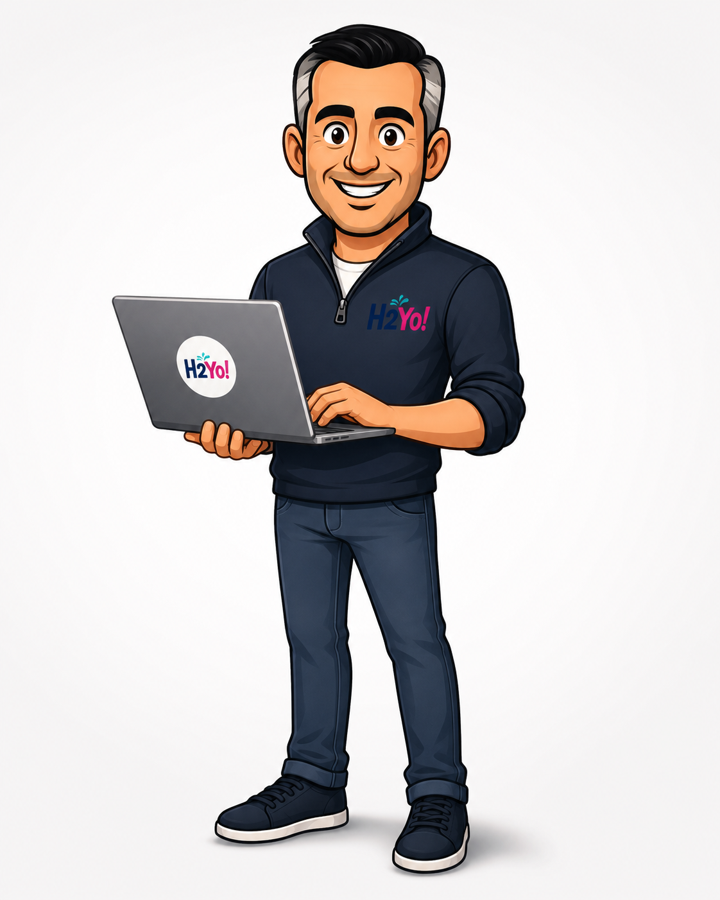

Faith / Charity Membership Drive
Free water after Mass. QR leads to a short mission video, donation button, membership interest form, and nurture sequence.

H2Yo! Text Me My ConceptBottle → Scan → Opt-In → CRM → Follow-Up
H2Yo! turns bottled water into a done-for-you lead-capture campaign people actually welcome. They scan. They smile. They opt in. You follow up.
Yo Campaign Score
Yo estimates campaign readiness, recommended quantity, scan-hook strength, likely scans, likely actions, and the best next step.
Campaign examples
Free water after Mass. QR leads to a short mission video, donation button, membership interest form, and nurture sequence.
Hand a bottle to roofers, landscapers, or vendors. QR offers a free campaign concept in exchange for name, phone, and email.
Fans scan for a positive message, giveaway, or player vote, then opt in for fundraiser updates, sponsor offers, and donations.
Sample bottle concepts



Meet Yo
Yo is committed, cool, confident, and cordial — focused on turning real-world handoffs into names, numbers, emails, and follow-up opportunities.

Done-for-you campaign packages
1,440 bottles
Custom label, QR code, opt-in landing page, lead capture form, and basic campaign setup.
2,880 bottles
Everything in Starter plus scan-hook optimization, campaign score, follow-up sequence, and sponsor/cause section.
Quarterly drops
Recurring campaigns, updated QR experiences, CRM nurturing, campaign reporting, and reorder planning.